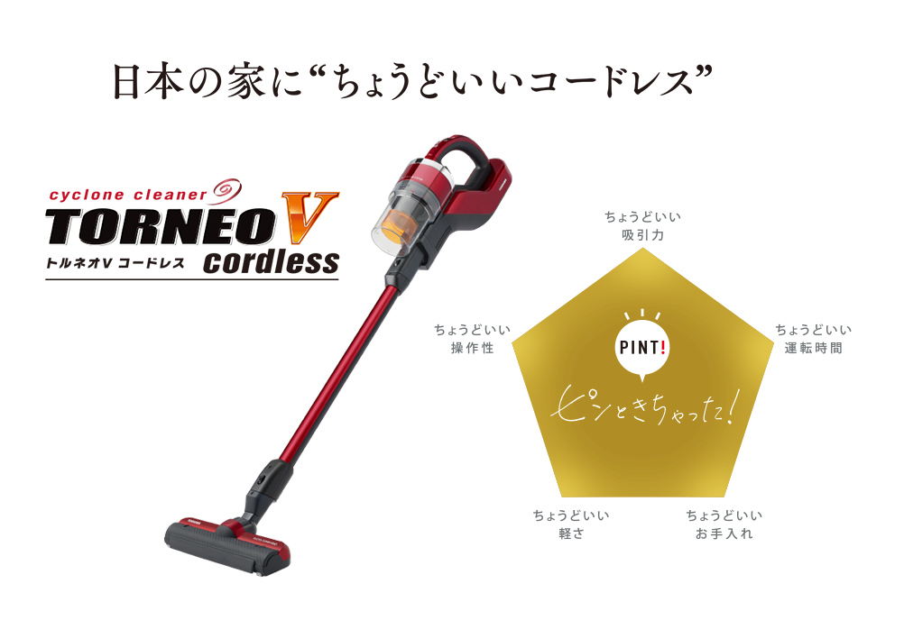

コードレスクリーナーを買った
8月に発売された東芝の VC-CL1500 というモデルの，1世代前の商品 VC-CL1400 を購入した．
型落ちなので値段もお手頃だった．

スペック
- ハイスピードDCモーターHD25 毎分最大 約 110,000回転 (Dysonにも劣らないらしい)
- サイクロン部のフィルタがない
- サイクロン手前のフィルタ掃除は時々でOK
- ゴミ捨てがカンタン(自走式)
- 片手で楽に操作可能
- 20分連続可動
- 前方巻き込み式
- +α アタッチメント
前方巻き込み式
一番良かったのは「前方巻き込み式」な点．巻き込み式でない場合，部屋の隅に溜まったゴミがとれるかどうかが違う．
掃除機は当たっているはずなのにゴミが残っているという経験したことないだろうか．これは掃除機の真下部分のゴミしか吸引してくれないタイプでよく起こる問題で，見た目はゴミに当たっているようでも吸引場所まで届いていないのが，原因らしい．
その点，実際に試したところ抜群に吸引してくれて，それだけで買いそうになった．
自走式
“自走式” なのも地味に違いを感じた．
片手で軽く持っているだけで勝手に前に進んでくれる．自動式でないモデルと並行で試すと違いが歴然．特にカーペットの上とか物理的に摩擦が起きやすいところでもスッと進むのはかなり楽．
以前，エレクトロラックス製のコードレスクリーナーを使っていたことがある．
デザインかっこいいしハンディにもなるしよさそう，と思って買ったが，物足りず売ってしまった過去がある．”ハンディになる” というのはハンディレベルの吸引力のマシンをスタンディングで使えるようにしているということらしい．上記の良い点も全くカバーされていなかった．．．
クイックルワイパー + コロコロで事足りる派
だったのだが，引っ越して事情が変わった．
- ソファーの隅
- カーペット
- 部屋の隅
- その他，手が届かないところ
引っ越して半年，これらのゴミが気になりだした．クイックルワイパーは優れものだが，ヘッドの形的に手が届かないところも多い．ヘッドからシートを外して手で掃除していたが，部屋も広く大変だった．週1まとめて掃除する頻度でも大変だったので，掃除機は必然になってきていた．
てか，コロコロの正式名称は「粘着カーペットクリーナー」というらしい笑．株式会社ニトムズという生活消費財関連を扱う会社が，商標出願もしていて出願から33年も経っている．ニトムズ＝NITTO HOME PRODUCTS
Dyson は買わなかった
掃除機の性能は，モーターの回転数で決まるらしい．”吸引力が変わらない” というのがウリの Dyson のやつも検討していたが，東芝のこのモデルも回転数的には負けず劣らずだった．実際にそれぞれ体験してみたところ，本体の軽さや性能・付属品含め東芝の方で全く問題なかった．
Dyson 製品は
- 本体が重い
- イギリス人の体型をペルソナにしていて，やや大きい
というのがネックだった．
なお，コードレスでないモデルの方が，Dyson のコードレスクリーナーより，吸引力は圧倒的に強いらしい．一軒家とか部屋がとても広いケースだとバッテリーの持続時間も考慮してコードありの方がよいと思う．